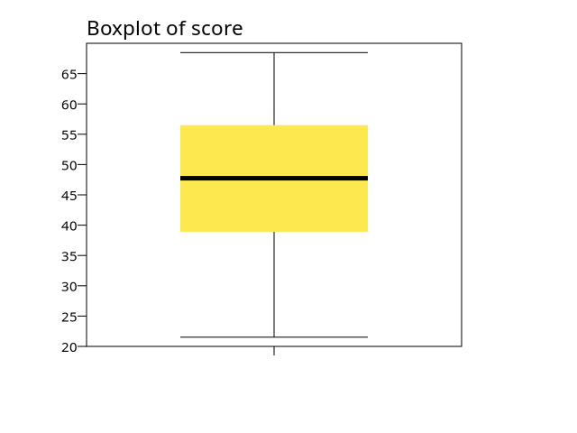
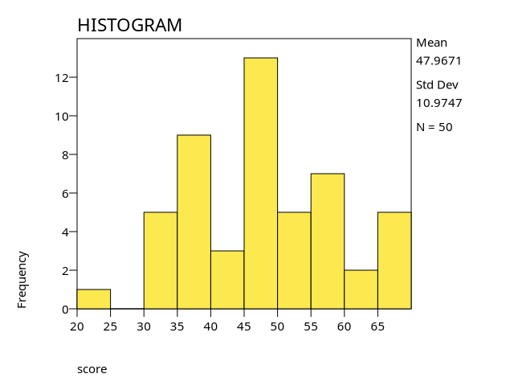
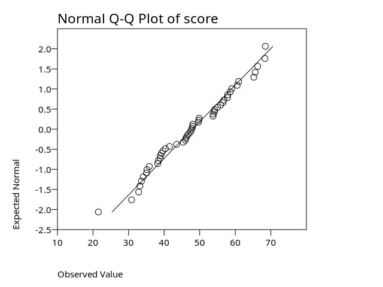
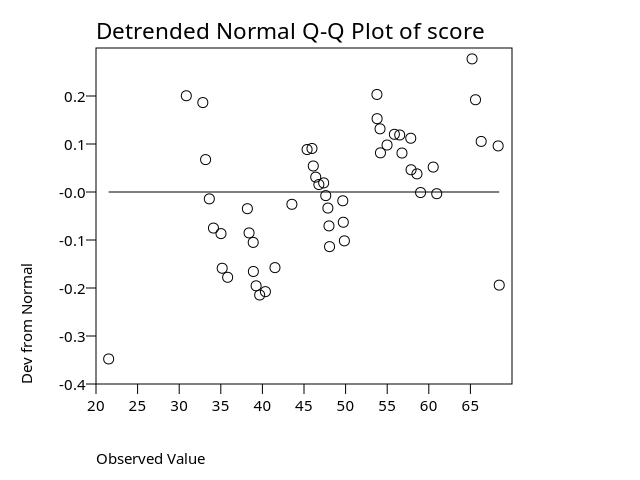

PSPP Syntax: Exploratory Analysis
INDEX
- DESCRIPTIVES
- FREQUENCIES
- CROSSTABS
- CORRELATIONS
- EXAMINE
- RANK
- T‑TEST
- ONEWAY
- ONEWAY IN GLM
- P-VALUE FOR F
- NPAR TESTS
- LINEAR REGRESSION
- RELIABILITY
PSPP Syntax: Exploratory Analysis
This page introduces PSPP’s basic exploratory commands — the tools you use to inspect a dataset before running any formal statistical models. It covers simple procedures such as descriptives, frequencies, crosstabulations, and correlations, with short examples that show the essential syntax and output. These commands help you understand the shape, distribution, and relationships in your data so you can decide what analyses to run next.
How to Run Descriptive Statistics
The
DESCRIPTIVEScommand computes means, standard deviations, and other summary statistics. PSPP supports variable lists, subcommands, and formatting options. These are specified through theDESCRIPTIVEScommand. Running descriptive statistics is one way to see the shape of your data.
DESCRIPTIVESdoes not read raw data, so if no active dataset is available—or there is no PSPP system file to load—useDATA LISTorGET DATAto read the raw data before running the procedure.
DESCRIPTIVEScan be found in PSPPIRE (GUI pspp) from the PSPPIRE Data Editor menus. Analyze->Descriptive Statistics->Descriptives.* Short example dataset for DESCRIPTIVES. DATA LIST FREE /x y z. BEGIN DATA 5 24 7 96 8 3 END DATA. LIST. DESCRIPTIVES VARIABLES = x y z /STATISTICS = MEAN STDDEV MIN MAX.Output:
Data List +-----+-----+----+ | x | y | z | +-----+-----+----+ | 5.00|24.00|7.00| |96.00| 8.00|3.00| +-----+-----+----+ Descriptive Statistics +--------------------+-+-----+-------+-------+-------+ | |N| Mean|Std Dev|Minimum|Maximum| +--------------------+-+-----+-------+-------+-------+ |x |2|50.50| 64.35| 5.00| 96.00| |y |2|16.00| 11.31| 8.00| 24.00| |z |2| 5.00| 2.83| 3.00| 7.00| |Valid N (listwise) |2| | | | | |Missing N (listwise)|0| | | | | +--------------------+-+-----+-------+-------+-------+This example uses a very small dataset so the results are easy to verify. The
LISTcommand shows that the data were read correctly. UsingLISTis always good practice when usingDATA LIST FREE. The means and minimum/maximum values can be checked by inspection, and although computing the standard deviations requires a bit more arithmetic, the values reported are consistent with the data.If the
/SAVEoption is included,DESCRIPTIVESalso computes Z‑scores for all variables specified and adds them to the active dataset as new variables. This works in PSPP, and psppire includes a checkbox in theDESCRIPTIVESdialog labeled “Save Z‑scores of selected variables as new.”.The
FORMATsubcommand used byDESCRIPTIVESis accepted for backward compatibility but has no effect in PSPP.How to Create Frequencies
The
FREQUENCIEScommand produces counts and percentages for the values of one or more variables and is often the first procedure run after reading a dataset, because it quickly shows whether the values were read correctly and whether any unexpected categories or codes appear.
FREQUENCIEScan also produce summary statistics and simple charts, but in its basic form it is most useful as a data‑checking tool.
FREQUENCIEScan be found in the PSPPIRE GUI menus at Analyze->Descriptive Statistics->Frequencies.DATA LIST FREE /group score. BEGIN DATA 1 10 1 12 2 15 2 18 2 18 END DATA. LIST. FREQUENCIES VARIABLES = group score.Output:
Data List +-----+-----+ |group|score| +-----+-----+ | 1.00|10.00| | 1.00|12.00| | 2.00|15.00| | 2.00|18.00| | 2.00|18.00| +-----+-----+ Statistics +---------+-----+-----+ | |group|score| +---------+-----+-----+ |N Valid | 5| 5| | Missing| 0| 0| +---------+-----+-----+ |Mean | 1.60|14.60| +---------+-----+-----+ |Std Dev | .55| 3.58| +---------+-----+-----+ |Minimum | 1.00|10.00| +---------+-----+-----+ |Maximum | 2.00|18.00| +---------+-----+-----+ group +----------+---------+-------+-------------+------------------+ | |Frequency|Percent|Valid Percent|Cumulative Percent| +----------+---------+-------+-------------+------------------+ |Valid 1.00| 2| 40.0%| 40.0%| 40.0%| | 2.00| 3| 60.0%| 60.0%| 100.0%| +----------+---------+-------+-------------+------------------+ |Total | 5| 100.0%| | | +----------+---------+-------+-------------+------------------+ score +-----------+---------+-------+-------------+------------------+ | |Frequency|Percent|Valid Percent|Cumulative Percent| +-----------+---------+-------+-------------+------------------+ |Valid 10.00| 1| 20.0%| 20.0%| 20.0%| | 12.00| 1| 20.0%| 20.0%| 40.0%| | 15.00| 1| 20.0%| 20.0%| 60.0%| | 18.00| 2| 40.0%| 40.0%| 100.0%| +-----------+---------+-------+-------------+------------------+ |Total | 5| 100.0%| | | +-----------+---------+-------+-------------+------------------+The
DATA LISTsuccessfully read the data, as shown by theLISToutput. The statistics we requested appear next. Of particular interest are the counts of valid and missing values. In this case all values are valid and none are missing, because this small example was constructed to be complete.Workflow Tip: Real datasets often contain missing or unexpected values, and
FREQUENCIESis a quick way to identify them.Following the statistics output are the frequency tables for
groupandscore. There are two groups and 5 subjects. Thescorevariable shows 18 occurs twice and the o ther values occur once. These results can be checked directly against the data.
FREQUENCIEScan summarize multiple variables at once, but it treats each variable separately.CROSSTABSandCTABLEScan also produce counts for categorical variables, but they’re designed for examining relationships or producing formatted tables, not for quick single‑variable inspection.How to Run a Cross-Tabulation
Cross-Tabulation or Crosstabs, also known as Contingency Tables, display the relationship between two categorical variables by showing the joint distribution of their values. It is often used after
FREQUENCIESto check that the categories of each variable combine as expected.The
CROSSTABS command can be found in the PSPPIRE GUI Data Editor menus at Analyze->Descriptive Statistics->Crosstabs.How to Create Two-Variable Crosstabs with Counts and Percentages
The simplest use of
CROSSTABSis a two‑variable table. The following example shows a basic 2×2 crosstab with counts, percentages, and the chi‑square test.
CROSSTABScan also produce row, column, and total percentages, which make it easier to compare groups. The same small dataset is used in this example to show how the values of one variable are distributed within the categories of another. It also requests the chi‑square test, which PSPP prints below the table.Output:
DATA LIST FREE /group outcome. BEGIN DATA 1 0 1 1 2 0 2 1 2 1 END DATA. LIST. CROSSTABS /TABLES = group BY outcome /STATISTICS = CHISQ. Data List ╭─────┬───────╮ │group│outcome│ ├─────┼───────┤ │ 1.00│ .00│ │ 1.00│ 1.00│ │ 2.00│ .00│ │ 2.00│ 1.00│ │ 2.00│ 1.00│ ╰─────┴───────╯ CROSSTABS /TABLES = group BY outcome /STATISTICS = CHISQ. Summary ╭───────────────┬─────────────────────────────╮ │ │ Cases │ │ ├─────────┬─────────┬─────────┤ │ │ Valid │ Missing │ Total │ │ ├─┬───────┼─┬───────┼─┬───────┤ │ │N│Percent│N│Percent│N│Percent│ ├───────────────┼─┼───────┼─┼───────┼─┼───────┤ │group × outcome│5│ 100.0%│0│ .0%│5│ 100.0%│ ╰───────────────┴─┴───────┴─┴───────┴─┴───────╯ group × outcome ╭───────────────────┬─────────────┬──────╮ │ │ outcome │ │ │ ├──────┬──────┤ │ │ │ .00 │ 1.00 │ Total│ ├───────────────────┼──────┼──────┼──────┤ │group 1.00 Count │ 1│ 1│ 2│ │ Row % │ 50.0%│ 50.0%│100.0%│ │ Column %│ 50.0%│ 33.3%│ 40.0%│ │ Total % │ 20.0%│ 20.0%│ 40.0%│ │ ╶─────────────┼──────┼──────┼──────┤ │ 2.00 Count │ 1│ 2│ 3│ │ Row % │ 33.3%│ 66.7%│100.0%│ │ Column %│ 50.0%│ 66.7%│ 60.0%│ │ Total % │ 20.0%│ 40.0%│ 60.0%│ ├───────────────────┼──────┼──────┼──────┤ │Total Count │ 2│ 3│ 5│ │ Row % │ 40.0%│ 60.0%│100.0%│ │ Column %│100.0%│100.0%│100.0%│ │ Total % │ 40.0%│ 60.0%│100.0%│ ╰───────────────────┴──────┴──────┴──────╯ Chi-Square Tests ╭────────────────────────────┬─────┬──┬──────────────────────────┬─────────────────────┬─────────────────────╮ │ │Value│df│Asymptotic Sig. (2-tailed)│Exact Sig. (2-tailed)│Exact Sig. (1-tailed)│ ├────────────────────────────┼─────┼──┼──────────────────────────┼─────────────────────┼─────────────────────┤ │Pearson Chi-Square │ .14│ 1│ .709│ │ │ │Likelihood Ratio │ .14│ 1│ .710│ │ │ │Fisher's Exact Test │ │ │ │ 1.033│ .700│ │Continuity Correction │ .00│ 1│ 1.000│ │ │ │Linear-by-Linear Association│ .11│ 1│ .739│ │ │ │N of Valid Cases │ 5│ │ │ │ │ ╰────────────────────────────┴─────┴──┴──────────────────────────┴─────────────────────┴─────────────────────╯The crosstabulation shows how the categories of the two variables combine. This confirms that the values were read correctly and that all expected category combinations appear. The chi‑square test is printed below the table. In this example the p‑value is 0.709. Whether this is considered evidence against the null hypothesis depends on the analyst’s chosen significance level and the question being asked. The important point here is that the procedure ran correctly and produced the expected statistics.
How to Create Three-Variable Crosstabs
CROSSTABScan include more than two variables. When you specify three variables, PSPP produces a single nested table (for example, AGE × YEAR × SEX) with hierarchical counts and totals. If you include additional variables, PSPP may split the output into multiple tables depending on how much nesting it can format. For more flexible multi‑layered layouts, useCTABLES, which is designed for complex, formatted tables.Here is a small example of survey data that collects
YEARof the survey,AGEGROUPof respondent andINCCAT, the respondent's income category.CROSSTABScan display all three categories.** Survey data example . DATA LIST LIST / YEAR (F4.0) AGEGROUP (A5) INCCAT (A7). Reading free-form data from INLINE. ╭────────┬──────╮ │Variable│Format│ ├────────┼──────┤ │YEAR │F4.0 │ │AGEGROUP│A5 │ │INCCAT │A7 │ ╰────────┴──────╯ BEGIN DATA 2018 18-29 <30k 2018 18-29 30-60k 2018 30-44 30-60k 2018 45-64 60-90k 2020 18-29 30-60k 2020 30-44 60-90k 2020 30-44 90k+ 2020 45-64 30-60k END DATA. CROSSTABS /TABLES = AGEGROUP BY INCCAT BY YEAR. Summary ╭────────────────────────┬─────────────────────────────╮ │ │ Cases │ │ ├─────────┬─────────┬─────────┤ │ │ Valid │ Missing │ Total │ │ ├─┬───────┼─┬───────┼─┬───────┤ │ │N│Percent│N│Percent│N│Percent│ ├────────────────────────┼─┼───────┼─┼───────┼─┼───────┤ │AGEGROUP × INCCAT × YEAR│8│ 100.0%│0│ .0%│8│ 100.0%│ ╰────────────────────────┴─┴───────┴─┴───────┴─┴───────╯ AGEGROUP × INCCAT × YEAR ╭──────────────────────────────┬───────────────────────┬─────╮ │ │ INCCAT │ │ │ ├──────┬──────┬────┬────┤ │ │ │30-60k│60-90k│90k+│<30k│Total│ ├──────────────────────────────┼──────┼──────┼────┼────┼─────┤ │YEAR 2018 AGEGROUP 18-29 Count│ 1│ 0│ │ 1│ 2│ │ ╶───────────┼──────┼──────┼────┼────┼─────┤ │ 30-44 Count│ 1│ 0│ │ 0│ 1│ │ ╶───────────┼──────┼──────┼────┼────┼─────┤ │ 45-64 Count│ 0│ 1│ │ 0│ 1│ │ ╶────────────────────┼──────┼──────┼────┼────┼─────┤ │ Total Count│ 2│ 1│ │ 1│ 4│ │ ╶─────────────────────────┼──────┼──────┼────┼────┼─────┤ │ 2020 AGEGROUP 18-29 Count│ 1│ 0│ 0│ │ 1│ │ ╶───────────┼──────┼──────┼────┼────┼─────┤ │ 30-44 Count│ 0│ 1│ 1│ │ 2│ │ ╶───────────┼──────┼──────┼────┼────┼─────┤ │ 45-64 Count│ 1│ 0│ 0│ │ 1│ │ ╶────────────────────┼──────┼──────┼────┼────┼─────┤ │ Total Count│ 2│ 1│ 1│ │ 4│ ╰──────────────────────────────┴──────┴──────┴────┴────┴─────╯EXAMINE - Checking Distribution Shape and Outliers
EXAMINE is PSPP's procedure for looking at the distribution of a variable before running an analysis. It provides summary statistics, normality tests, and optional plots such as boxplots. This is useful for deciding whether a parametric test (like a t-test) is appropriate or whether a nonparametric test might be better.
The EXAMINE command can be found in the Data Editor menu Analyze->Descriptive Statistics->Explore. Note that PSPPIRE calls the EXAMINE command Explore in the menus, but when it writes the pspp commands, you'll see it is EXAMINE.
EXAMINE Notes
EXAMINE only analyzes numeric variables. String variables are ignored, and if not enough numeric values are supplied, EXAMINE produces only the N/Valid/Missing table. You may see "NaN" which stands for "Not a Number". That means the calculation could not be completed or came to a result that could not be displayed, for example, as a result of division by zero.
EXAMINE Example
This example uses a data set created from a pspp function called
RV.NORMAL(mean,sd)created in anINPUT PROGRAM. This should produce test data that is normally distributed with the defined mean and SD.
EXAMINEincludes the Shapiro-Wilk normality test in its output. A small p-value indicates the variable is not normally distributed.INPUT PROGRAM. LOOP #i = 1 TO 50. COMPUTE score = RV.NORMAL(50, 10). END CASE. END LOOP. END FILE. END INPUT PROGRAM. EXAMINE VARIABLES = score /STATISTICS = DESCRIPTIVES /PLOT = ALL.Case Processing Summary +-----+-------------------------------+ | | Cases | | +----------+---------+----------+ | | Valid | Missing | Total | | +--+-------+-+-------+--+-------+ | | N|Percent|N|Percent| N|Percent| +-----+--+-------+-+-------+--+-------+ |score|50| 100.0%|0| .0%|50| 100.0%| +-----+--+-------+-+-------+--+-------+See examine4-1.png for a chart.
See examine4-2.png for a chart.
See examine4-3.png for a chart.
See examine4-4.png for a chart.
Descriptives +--------------------------------------------------+---------+----------+ | |Statistic|Std. Error| +--------------------------------------------------+---------+----------+ |score Mean | 50.22| 1.34| | ---------------------------------------------+---------+----------+ | 95% Confidence Interval for Mean Lower Bound| 47.53| | | Upper Bound| 52.91| | | ---------------------------------------------+---------+----------+ | 5% Trimmed Mean | 50.60| | | ---------------------------------------------+---------+----------+ | Median | 52.22| | | ---------------------------------------------+---------+----------+ | Variance | 89.49| | | ---------------------------------------------+---------+----------+ | Std. Deviation | 9.46| | | ---------------------------------------------+---------+----------+ | Minimum | 22.93| | | ---------------------------------------------+---------+----------+ | Maximum | 68.30| | | ---------------------------------------------+---------+----------+ | Range | 45.38| | | ---------------------------------------------+---------+----------+ | Interquartile Range | 11.41| | | ---------------------------------------------+---------+----------+ | Skewness | -.69| .34| | ---------------------------------------------+---------+----------+ | Kurtosis | .44| .66| +--------------------------------------------------+---------+----------+ Tests of Normality +-----+-----------------+ | | Shapiro-Wilk | | +---------+--+----+ | |Statistic|df|Sig.| +-----+---------+--+----+ |score| .97|50| .19| +-----+---------+--+----+
EXAMINEprovides descriptive statistics and several diagnostic plots for the variable. The output includes the mean, standard deviation, normality test, and the associated charts. This example demonstrates typical results when using/STATISTICS = DESCRIPTIVESand/PLOT = ALLon a reasonably sized dataset.CORRELATIONS
PSPP currently supports only Pearson product–moment correlations. This
CORRELATIONSprocedure is intended for exploratory analysis — inspecting linear relationships between variables and checking whether variables tend to move together.You can find Correlations in the Data Editor Analyze menu: Analyze-> Bivariate Correlation.
PSPP does not provide:
- Spearman or Kendall correlations
- Partial correlations
- Options to save the correlation matrix to a file
- Export of the matrix for use in other procedures
The output is for inspection only.
Two options for
CORRELATIONSare how missing data are to be handled. They areLISTWISEandPAIRWISE. With LISTWISE, a case is included only if it has valid data for all variables. PAIRWISE tells the procedure to use all cases valid for each pair of variables. PAIRWISE is the default setting.Code:
DATA LIST LIST /group score hours gpa passed major age. BEGIN DATA 1 72 3 2.8 1 1 19 1 75 4 3.0 1 1 20 1 68 2 2.5 0 1 18 2 81 5 3.4 1 2 21 2 79 4 3.2 1 2 22 2 74 3 3.0 0 2 20 3 90 6 3.8 1 3 23 3 88 5 3.6 1 3 22 3 85 5 3.5 1 3 21 END DATA. LIST. CORRELATIONS /VARIABLES = score hours /MISSING = LISTWISE. EXECUTE.Output:
DATA LIST LIST /group score hours gpa passed major age. Reading free-form data from INLINE. ╭────────┬──────╮ │Variable│Format│ ├────────┼──────┤ │group │F8.0 │ │score │F8.0 │ │hours │F8.0 │ │gpa │F8.0 │ │passed │F8.0 │ │major │F8.0 │ │age │F8.0 │ ╰────────┴──────╯ BEGIN DATA 1 72 3 2.8 1 1 19 1 75 4 3.0 1 1 20 1 68 2 2.5 0 1 18 2 81 5 3.4 1 2 21 2 79 4 3.2 1 2 22 2 74 3 3.0 0 2 20 3 90 6 3.8 1 3 23 3 88 5 3.6 1 3 22 3 85 5 3.5 1 3 21 END DATA. Data List ╭─────┬─────┬─────┬────┬──────┬─────┬─────╮ │group│score│hours│ gpa│passed│major│ age │ ├─────┼─────┼─────┼────┼──────┼─────┼─────┤ │ 1.00│72.00│ 3.00│2.80│ 1.00│ 1.00│19.00│ │ 1.00│75.00│ 4.00│3.00│ 1.00│ 1.00│20.00│ │ 1.00│68.00│ 2.00│2.50│ .00│ 1.00│18.00│ │ 2.00│81.00│ 5.00│3.40│ 1.00│ 2.00│21.00│ │ 2.00│79.00│ 4.00│3.20│ 1.00│ 2.00│22.00│ │ 2.00│74.00│ 3.00│3.00│ .00│ 2.00│20.00│ │ 3.00│90.00│ 6.00│3.80│ 1.00│ 3.00│23.00│ │ 3.00│88.00│ 5.00│3.60│ 1.00│ 3.00│22.00│ │ 3.00│85.00│ 5.00│3.50│ 1.00│ 3.00│21.00│ ╰─────┴─────┴─────┴────┴──────┴─────┴─────╯ CORRELATIONS /VARIABLES = score hours /MISSING = LISTWISE. Correlations ╭─────────────────────────┬─────┬─────╮ │ │score│hours│ ├─────────────────────────┼─────┼─────┤ │score Pearson Correlation│1.000│ .954│ │ Sig. (2-tailed) │ │ .000│ ├─────────────────────────┼─────┼─────┤ │hours Pearson Correlation│ .954│1.000│ │ Sig. (2-tailed) │ .000│ │ ╰─────────────────────────┴─────┴─────╯Interpretation:
Score and hours are strongly positively correlated (r = .954). This means that cases with higher hours tend to have higher scores, and cases with lower hours tend to have lower scores. The relationship is strong and consistent.
Important: Correlation does not necessarily imply causation
A classic example is that suicide rates and ice cream sales are strongly correlated, but neither one causes the other. Both tend to rise during warmer months, so the relationship is driven by a third factor (seasonality), not a direct causal link.
Correlation describes how variables move together — not why.
RANK
The RANK procedure assigns an order number to values in a data set based on several rules. One of the main things about ranking values is how the tied values are handled. The default method used by PSPP is the MEAN of the ranks that would be applied to the tied values if we didn't handle them another way. If the ranks assigned were 1, 2, 3, etc. without regard to tied values I'd call these the base ranks. They are not the final ranks, but an intermediate step to handling tied values.
The following examples show how each tie-handling method works. Each method is demonstrated with the same data, and each produces a new variable containing the ranks assigned under that method.
Workflow tip: PSPP does not allow multiple output variables in a single
/RANK INTOclause. To produce ranks using different tie methods, run the RANK command multiple times, each with its own/TIES=setting.In the first example below, the RANK procedure is run and the mean method is specified (it is the default if you don't specify any tie method).
DATA LIST LIST /X . Reading free-form data from INLINE. ╭────────┬──────╮ │Variable│Format│ ├────────┼──────┤ │X │F8.0 │ ╰────────┴──────╯ BEGIN DATA. 0 0 0 1 1 3 END DATA. LIST. Data List ╭────╮ │ X │ ├────┤ │ .00│ │ .00│ │ .00│ │1.00│ │1.00│ │3.00│ ╰────╯ RANK VARIABLES = x /RANK INTO r_mean /TIES = MEAN . Variables Created by RANK ╭─────────────────┬────────────┬────────╮ │Existing Variable│New Variable│Function│ ├─────────────────┼────────────┼────────┤ │X │r_mean │RANK │ ╰─────────────────┴────────────┴────────╯ LIST /r_mean. Data List ╭──────╮ │r_mean│ ├──────┤ │ 2.000│ │ 2.000│ │ 2.000│ │ 4.500│ │ 4.500│ │ 6.000│ ╰──────╯0, 0, 0, 1, 1, 3 gives us base ranks of 1, 2, 3, 4, 5, 6. With 0, 0, 0. ranked as 1, 2, 3, the mean of the ranks is taken from 1+2+3/3=2. For the 1, 1 values the mean of the base ranks of 4 and 5 becomes ranks of 4.5. The resulting ranks should be 2, 2, 2, 4.5, 4.5, and 6, which is how they came out.
The LOW method for ties chooses the lowest base rank for a set of ties and applies it to the ties in that set of values. 0, 0, 0, 1, 1, 3 with base ranks of 1, 2, 3, 4, 5, 6 gives 1, 1, 1, 4, 4, 6. The low value of 1, 2, 3 is 1, and low value of 4, 5, is 4.
RANK VARIABLES = x /RANK INTO r_low /TIES = LOW. Variables Created by RANK ╭─────────────────┬────────────┬────────╮ │Existing Variable│New Variable│Function│ ├─────────────────┼────────────┼────────┤ │X │r_low │RANK │ ╰─────────────────┴────────────┴────────╯ LIST /r_low. Data List ╭─────╮ │r_low│ ├─────┤ │1.000│ │1.000│ │1.000│ │4.000│ │4.000│ │6.000│ ╰─────╯The HIGH method for ties chooses the highest base rank for a set of ties. 0, 0, 0, 1, 1, 3 with base ranks of 1, 2, 3, 4, 5, 6 would result in 3, 3, 3, 5, 5, 6.
RANK VARIABLES = x /RANK INTO r_high /TIES = HIGH. Variables Created by RANK ╭─────────────────┬────────────┬────────╮ │Existing Variable│New Variable│Function│ ├─────────────────┼────────────┼────────┤ │X │r_high │RANK │ ╰─────────────────┴────────────┴────────╯ LIST /r_high. Data List ╭──────╮ │r_high│ ├──────┤ │ 3.000│ │ 3.000│ │ 3.000│ │ 5.000│ │ 5.000│ │ 6.000│ ╰──────╯The CONDENSE method assigns consecutive ranks to distinct values ignoring base ranks entirely. All cases with the same value get the same rank. This results in a rank variable with no gaps in ranks and no fractional ranks. 0, 0, 0, 1, 1, 3 ranks to 1, 1, 1, 2, 2, 3.
RANK VARIABLES = x /RANK INTO r_cond /TIES = CONDENSE. Variables Created by RANK ╭─────────────────┬────────────┬────────╮ │Existing Variable│New Variable│Function│ ├─────────────────┼────────────┼────────┤ │X │r_cond │RANK │ ╰─────────────────┴────────────┴────────╯ LIST r_cond. Data List ╭──────╮ │r_cond│ ├──────┤ │ 1.000│ │ 1.000│ │ 1.000│ │ 2.000│ │ 2.000│ │ 3.000│ ╰──────╯The
RANKprocedure is useful whenever the order of values matters more than their actual numeric size. Ranking is the foundation of many nonparametric tests (such as Mann–Whitney, Wilcoxon, Kruskal–Wallis, and Spearman correlations), and it is also helpful when the data are skewed, contain outliers, or are measured on an ordinal scale. By converting raw values into ranks, PSPP lets you analyze the relative positions of cases without assuming anything about the underlying distribution of the data.
[PSPP Syntax] [[PSPP Analysis-Exploratory]] [PSPP Analysis-Inferential & Modeling] [PSPP Merging] [PSPP Multi-Record]Feedback
If you have suggestions, comments, or corrections, you can open an issue on the Github repository Issues list